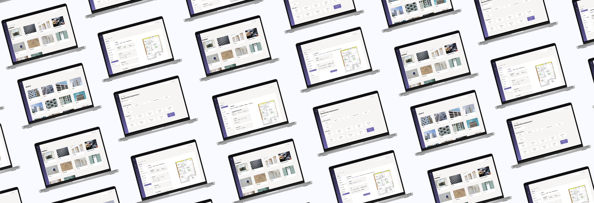
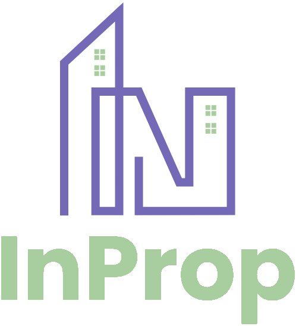
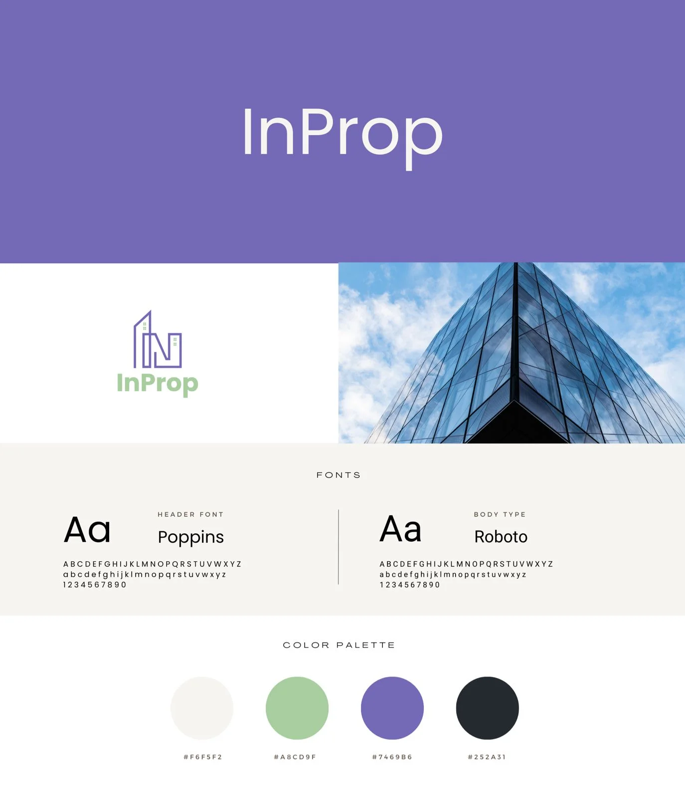
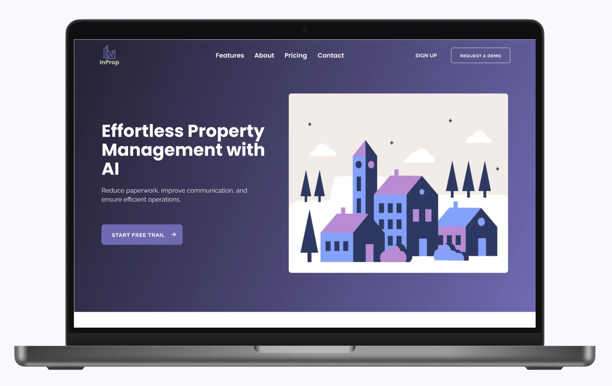

Some high-fidelity Wireframes screens
My Role
Product Designer
Duration
May - September 2024
Tools
Adobe Photoshop, Figma, Miro
My Contributions
As the sole designer, I developed the logo, brand identity, and color palette for consistency across the platform. I also designed a user-friendly interface, created wireframes, prototypes, and a design system. Throughout, I collaborated closely with developers and stakeholders to ensure seamless execution.
Design Challenge
The challenge was to turn stacks of paper-based property documents into a simple and easy-to-use digital platform. The design had to present AI-driven data in a clear way, helping homeowners and property managers access information quickly, reduce costs, improve sustainability, and make better decisions.
User Research & Insights
Understanding the Problem
To create an effective solution, it was essential to first
understand the challenges property managers and homeowners
face. This phase involved gathering insights to inform our
design and ensure the product would meet real needs.
Key Research Methods
-
Stakeholder Interviews
Engaged with property managers, asset managers, and homeowners to understand their frustrations with current workflows. Through these interviews, common pain points emerged, such as the inefficiency of paper-based systems and lack of integrated data. -
Competitive Analysis
Reviewed competitors' platforms to identify features that worked well, as well as gaps where InProp could offer a more streamlined, user-friendly experience. -
User Research
Conducted user research into current property management workflows to better understand the complexity of managing and organizing building documentation. The research revealed that many tasks were slow, error-prone, and unnecessarily time-consuming.
Main Pain Points
-
Paper-based systems are inefficient and lead to slow processes, often resulting in errors.
-
There is no central system to connect data across different documents, causing disorganization and making data hard to access.
-
The lack of real-time updates and comprehensive data impacts property valuation accuracy and sustainability decisions
Wireframing & UI Design
Based on research insights, I designed wireframes to define the platform's structure, flow, and features. Through multiple iterations, I refined the UI screens, ensuring a smooth and intuitive user experience

Usability Testing
Conducted testing with the target audience to gather feedback on key features and functionality. Based on their input, made minor adjustments to improve the user experience, ensuring the platform was intuitive and aligned with user needs
Logo & Brand Identity Design
Building on research insights, I developed several logo concepts for InProp. The final design combines property and technology in a clean, modern style. The "I" is shaped like a building, symbolizing the properties managed, while the "N" represents the flow of data. The windows in the logo reflect transparency, activity, and the dynamic nature of properties.


Visual Style Guide
A cohesive color palette was designed to reflect InProp's values of trust, innovation, and growth. Deep lavender symbolizes trust, while soft green adds a modern touch. Poppins for headings and Roboto for body text ensure a friendly, professional, and user-friendly design
Landing Page Design
I designed the landing page to highlight InProp's key features, using clear text and easy navigation to provide a smooth, user-friendly experience that encourages user engagement

Learnings
I gained valuable insights into creating a brand identity from scratch that aligns with the company’s values and resonates with the audience. By simplifying complex data and gathering user feedback, I designed a user-friendly platform that provided clearer insights, resulting in a cost-effective solution that enhanced decision-making and sustainability